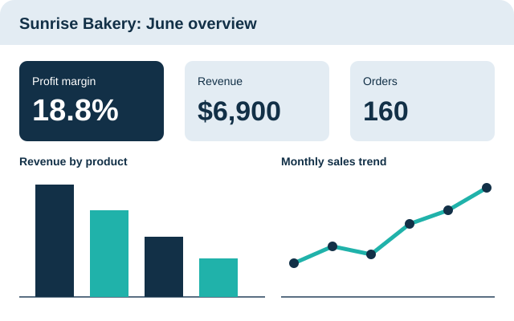
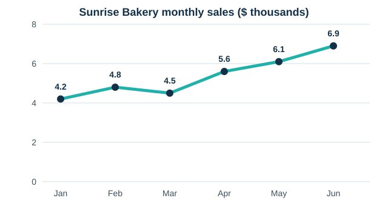

Understand your customers
Find out who buys from you, how often they come back and how much they spend each time.
Read about customersSmall businesses collect data every day: sales, customers, products and costs. Business Data Insights explains how to read that data in plain language, so you can spot what is working and fix what is not.

Find out who buys from you, how often they come back and how much they spend each time.
Read about customersSee which products earn the most money and how your sales change from month to month.
Read about salesMeet the key business metrics, such as profit margin and average order value, and learn what they tell you.
Explore the metricsSunrise Bakery is a fictional example shop used throughout this site. Its monthly sales rose from $4,200 in January to $6,900 in June, with one small dip in March. A chart makes that pattern easy to see, while a long list of numbers would hide it.
